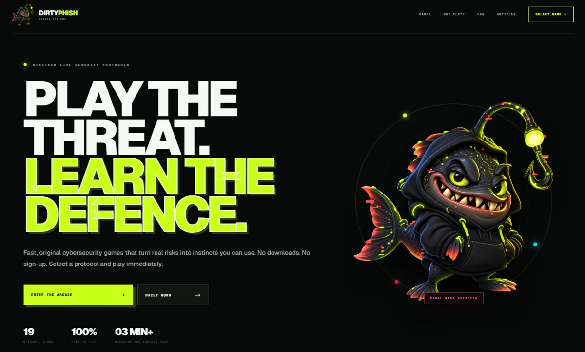

INDEPENDENT PROJECT · LIVE WEBSITE
DirtyPhish
I created DirtyPhish, a cybersecurity learning platform with original browser-based games and educational articles.
It covers phishing, identity, cloud and defensive security through interactive learning.
dirtyphish.com
